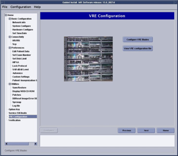
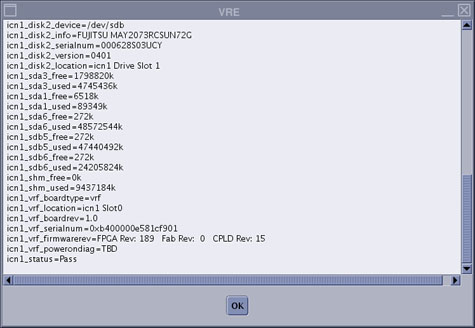
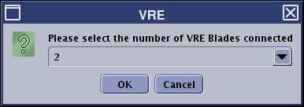
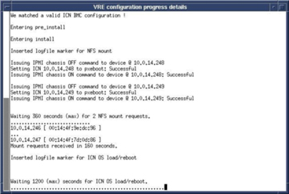
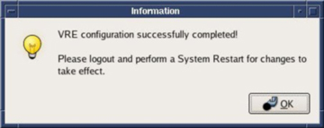

GE Exclusive Use Only
Direction 5670006, Rev# 1
Discovery MR750w GEM Service Methods
Module Version 3.0, Version Date 2/16/11
GE Exclusive Use Only |
| Required Persons | Preliminary Reqs | Procedure | Finalization |
|---|---|---|---|
| 1 | 10 mins | 30 mins | 5 mins |
This procedure is required after ICN Replacements.
This procedure may also be used when troubleshooting issues with the VRE system. Refer to VRE Troubleshooting.
| ||||
| ELECTROCUTION HAZARD! | ||||
| DANGEROUS VOLTAGES ARE PRESENT THROUGH OUT THE SYSTEM CABINET WHEN POWER IS APPLIED. | ||||
| REFER TO OSHA LOCKOUT TAGOUT REQUIREMENTS. |
| Condition | Reference | Effectivity |
|---|---|---|
A system restart is required after configuration for changes to take affect. | - | - |
| ||||
| Reconfigure the ICNs only if absolutely necessary. If troubleshooting, run diagnostics. Do NOT reconfigure ICNs with a failing ICN. | ||||
Make sure there are no applications running. Restart the system by right clicking the mouse and selecting [System Restart].
When the screen displays, log in as root with operator for the password. Select [Yes] to invoke Guided Install.
Select VRE Configuration in the left navigation pane.
Illustration 1: Guided Install - VRE Configuration

Click [View VRE configuration file] to view the current output status of ICNs shown below.
Illustration 2: View VRE Configuration File

Click [OK] to return to the VRE Configuration screen. Click [Configure VRE Blades]. An information window displays requesting the user to make sure hard connections are secure. (This ensures that the operating system will be properly installed onto the ICNs.)
Click [Continue] if connections are complete.
Click [Abort] if the connections are not complete. Make sure all hardware connections are secure before continuing.
Illustration 3: Information Window

A window displays asking for the number of VRE blades to configure. Select the number of blades (1, 2 or 4) installed in the cabinet and click [OK].
Illustration 4: VRE Blades Window

The VRE configuration runs and progress details display in a separate window. Review the details once the configuration is complete to determine if the ICN passes or fails. If the ICN Reconfiguration fails, review the extended error messages for subsequent actions.
Illustration 5: VRE Progress Details

Click [OK] in the Information window to reboot the system after successful VRE configuration.
Illustration 6: Information Window

Right click on desktop background and select [Service Tools], [System Restart].
Click [Yes] to confirm system restart. (Computer will reboot.)
Log in with:
Username: sdc
Password: adw2.0
Perform a test scan to ensure the system is working properly.